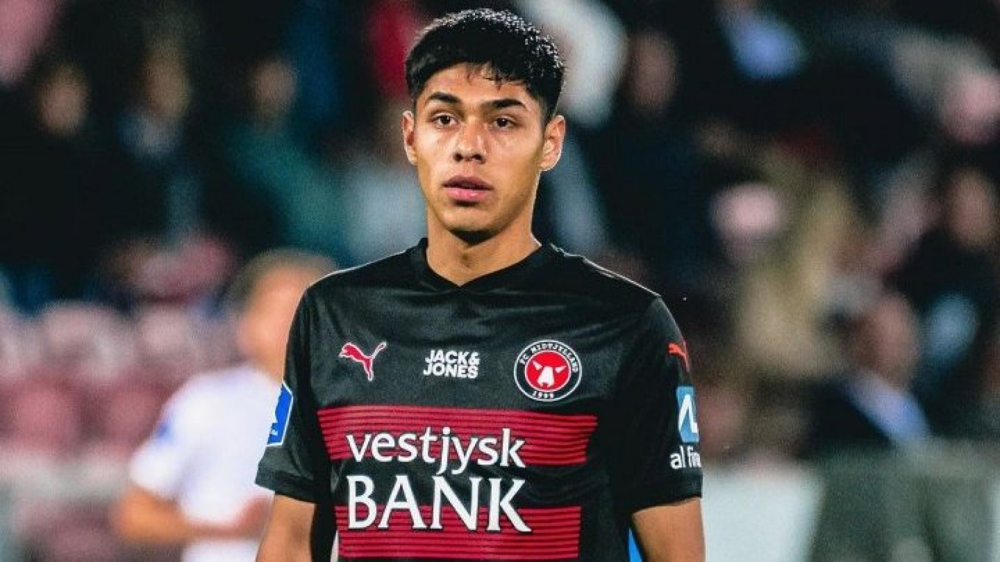

Fecha de publicacion 1 de abril de 2024 12:56 am
La figura de la roja en la gira de amistosos por europa fue titular en la derrota del midtjylland. Su equipo perdio la punto dela superliga, y quedo al margende los puesto de champions league.
El midtjylland, del seleccionado chileno Dario Osorio, sufrio una dolorosa caida de local por 3-2 ante el nordsjaelland y desperdiciola chance de manter el liderato en la liga de dinamarca. El ex volante de universidad de chile fue titular y salio reemplazado por al-hadji kanara en el minuto 85 en la derrota de su equipo Ocupo la posicion de mediocampista por derecha, ubicacion muy similar a la que lee asigno gareca en los amistosos ante albania y francia, donde sorprendio a todos y fue la gran figura de la roja.
Dario Osorio tuvo dos remates al arco, sin embargo, no pudo vilnerar la porteria nordsjaelland para que el equipo local consiguiera el triunfo. esta teporada, osorio ha dioutado 14 partidos de los 16 posibles, donde aporto con cinco goles. El midtjlland venia de ganar cuatro partidos al hilo en la superliga danesa. La ultima derrota del equipo del chileno fue el 18 de febrero de este año ante el equipo que hoy marcha primero, el brondby. El proximo partido del equipo de la ciudad de herning sera el domingo 7 de abril ante el Aarhus, conjunto que marcha quinto en la zona de compeonato de la ligqa de dinamrcaa.